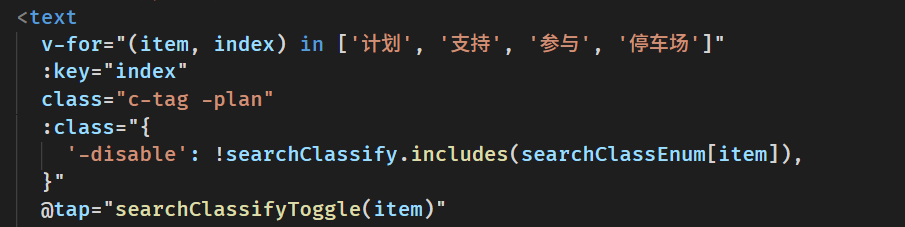
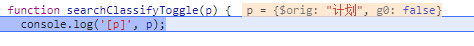
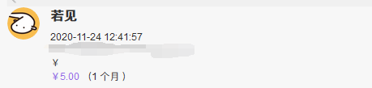

日常 最近我的手机 firefox 完全无法正常使用 bing.com
日常 使用 tsx 来替代 ts-node 真的很好用。
日常 npm 在 windows 上使用 npm install git+https://xxx 不会安装相关依赖，但在 github actions 环境下会安装其他依赖，我炸了
日常 npm 在 windows 上使用 npm install git+https://xxx 不会安装相关依赖，但在 github actions 环境下会安装其他依赖，我炸了
日常 npm 在 windows 上使用 npm install git+https://xxx 不会安装相关依赖，但在 github actions 环境下会安装其他依赖，我炸了
日常 ESM 下想要在自己的代码内去重写其它模块的函数好难啊，突然对 es 模块规范的好感丢失了
日常 ESM 下想要在自己的代码内去重写其它模块的函数好难啊，突然对 es 模块规范的好感丢失了
日常 ESM 下想要在自己的代码内去重写其它模块的函数好难啊，突然对 es 模块规范的好感丢失了
日常 因为宿舍的电费不可以取出来，而我下次再来就要换宿舍了，于是我想开着那没什么用的空调浪费一下，然后到下午3点的时候。就用完了，如果我不开空调的话，电应该是刚刚在我走的时候用完的嗯，一切都是最好的安排。我不应该浪费电的。
日常 这个 v-for 的数组使用模板内定义的数据就得到了
很奇怪的结果 ，但使用变量的话就没问题

日常 这个 v-for 的数组使用模板内定义的数据就得到了
很奇怪的结果 ，但使用变量的话就没问题
参数 p 可能是 uni-app 内部的包装

循环引用
循环引用
日常 发现 Firefox 的一个奇怪实现，鼠标按住左键滑动选择一但进入 Web Components 就转为只选中 Web Components 中的内容，在 页面中 ctrl + a 也无法选中 Web Components 中的内容， Web Components slot 中的内容却是可以选中的
日常 今天突然发现在
爱发电

收到赞助 5元，非常开心 ヾ(≧▽≦*)o
日常 闲评 2021年了 微信小程序还不支持
first-of-type 微信社区相关